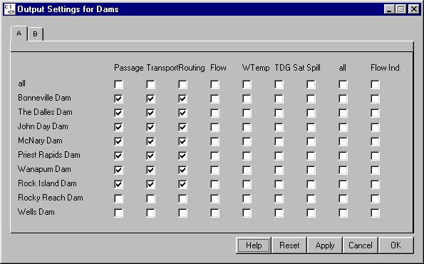
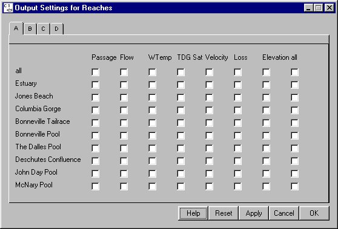
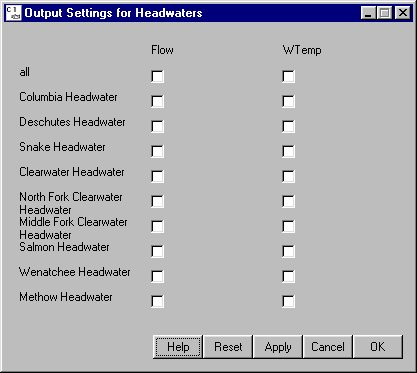

Output Settings: Specifying Desired Outputs
Selecting Run Output Settings opens three windows for configuring dam, reach and headwater output to save for examination after run completion: Output Settings for Dams, Output Settings for Reaches and Output Settings for Headwaters. When running in either Scenario or Monte Carlo mode, a number of results are calculated by the model; however, only those requested by you will be available following the run. For Scenario Mode runs, you can view the output either in histograms, e.g. Passage Histograms, or in the Message Log. For Monte Carlo Mode runs, you can view the output with the Monte Data Report and Monte Analysis under the Analysis Menu.
Output Settings opens three windows for configuring dam, reach and headwater output to save for examination after run completion: Output Settings for Dams, Output Settings for Reaches and Output Settings for Headwaters. When running in either Scenario or Monte Carlo mode, a number of results are calculated by the model; however, only those requested by you will be available following the run. For Scenario Mode runs, you can view the output either in histograms, e.g. Passage Histograms, or in the Message Log. For Monte Carlo Mode runs, you can view the output with the Monte Data Report and Monte Analysis under the Analysis Menu.
Note. Be sure to specify the desired outputs and save them to the yearly input data files to be used in the Monte Carlo alternatives or use the Lock Output Settings feature.
Output Settings for Dams
For Dams, you can select to record output from the following parameters.
- Passage: Total fish passage (survival).
- Transport: Total fish transport passage and percent of total run.
- Routing: Total fish passage through turbine, bypass and spillway routes at the dam and the percent of total run.
- Flow: Flow (in kcfs) exiting a dam based on headwater input flows and reservoir losses.
- WTemp: Daily water temperature at the dam based on water temperature set in the headwaters.
- TDG Sat: Level of total dissolved gas saturation above 100% exiting a dam for both powerhouse and spill flow.
- Spill: Day-averaged spill fraction at a dam.
- Flow Ind.: Flow Indicator dam keeps track of the average flow at the indicator dam during passage of the various stocks. Only one dam can be selected as the flow indicator.
Click the check boxes to select the desired outputs. A whole row or column can be selected by clicking the all check box in a dam row (selects all parameters for that dam) or parameter column (selects all dams for that parameter). All check boxes can be selected by clicking the all column check box in the all row.

Output Settings for Dams window
Output Settings for Reaches
For Reaches, you can select to record output from the following parameters.
- Passage: Total fish passage through the reach and the percent of the total run.
- Flow: Flow (in kcfs) exiting a reach.
- WTemp: Daily water temperature in the reach based on water temperature set in the headwaters.
- TDG Sat: Level of total dissolved gas saturation above 100% exiting a reach for both left-bank and right-bank flow.
- Velocity: Daily river velocity in miles per day based on water elevation, bathymetry and daily flow level.
- Loss: Flow loss in a river segment due to withdrawal, mainly from irrigation, and groundwater input (flow returned to the segment).
- Elevation: The mode used to run COMPASS determines how elevation is calculated. In Scenario Mode, daily elevation is based on user input. In Monte Carlo Mode, elevation is input from either the
flow.archive file if it contains reservoir elevation or from specified yearly input files specified by you.
Click the check boxes to select the desired outputs. A whole row or column can be selected by clicking the all check box in a reach row (selects all parameters for that reach) or parameter column (selects all reaches for that parameter). All check boxes can be selected by clicking the all column check box in the all row.

Output Settings for Reaches window
Output Settings for Headwaters
For Headwaters, Flow and Water Temperature are the only available output parameters.
- Flow: The mode used to run COMPASS determines how headwater flow is created. In Scenario Mode, daily flows are based on specified input flows or randomly set using the Headwater Modulation function. In Monte Carlo Mode, headwater flows are calculated from flows at the dams as input by the
flow.archive file, or as specified in the yearly input data file(s) used for the alternative.
- WTemp: Daily headwater temperature based on user input.
Click the check boxes to select the desired outputs. A whole row or column can be selected by clicking the all check box in a headwater row (selects all parameters for that headwater) or parameter column (selects all headwaters for that parameter).

Output Settings for Headwaters window